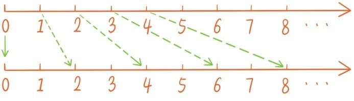
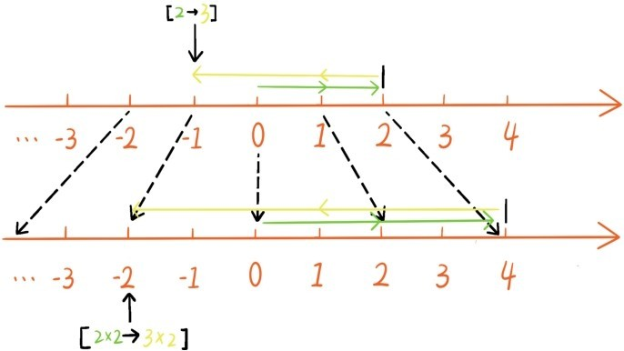
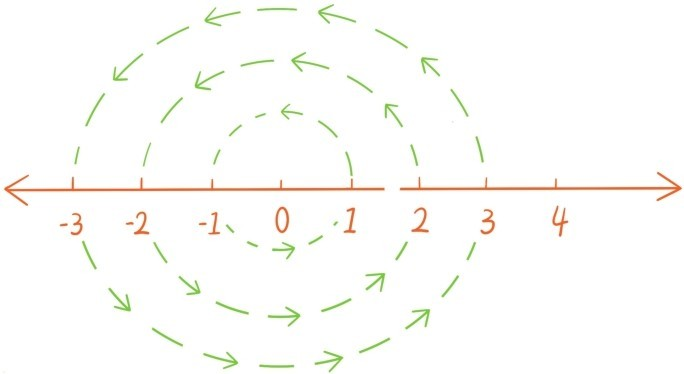

——有理数的乘除运算
上一节讲过让每个有理数都加上-3相当于是让整条数轴向左平移3。所以有理数的加法还可以看成是数轴的平移。现在定义有理数乘法，是希望成为分数乘法的拓展。先来看看让所有分数都乘以一个正数，比如乘以2的效果：

从数轴上看，就是将数轴保持原点不变均匀地放大成原来的两倍，而乘以 的效果就是将数轴保持原点不变均匀地缩小成原来的 倍。让所有有理数都乘以一个正数，在整条数轴上看，也是如此。所以，有理数乘分数是定义为有理数的前部后部同时乘以这个分数
[a→b]×c=[a×c→b×c]
其中a，b，c都是表示分数，例如
(-5)×2=[0→5]×2=[0×2→5×2]=-10

比较麻烦的是如何定义乘以一个负有理数。很多学生刚接触有理数乘法时，常常会提这样一个问题：
问题17：为什么负负得正，两个负数相乘会等于一个正数？
如何合理地定义乘以一个负有理数呢？例如[5→7]×(-2)该等于多少？这时运算定律成为指南。我们定义的乘法如果是合理的，加法乘法分配律一定成立，因此[5→7]×(-2)+[5→7]×2=[5→7]×[(-2)+2]=[5→7]×0=0，所以[5→7]×(-2)应该是[5→7]×2的相反数。这就启发我们将有理数乘负数定义为将有理数的前部后部调换，并同时乘以这个负数的绝对值（或者相反数）
其中a，b，c都是表示分数，例如
总结有理数乘法的这些等式，就得到有理数乘法的法则：
两个有理数相乘，先把绝对值相乘，同号得正，异号得负。
这时乘法交换律和乘法结合律自然是成立的。例如，比较等式左右两边，根据有理数乘法法则，两边的绝对值相等，符号也是一样的，所以等式自然成立。
最后，我们验证分配律。该如何说明下列等式成立呢（其中a，b，c，d，e都是表示分数）
根据有理数加法与乘法的定义，等式左边等于[(b+d)e→(a+c)e]，等式右边等于[be+de→ae+ce]。根据分数运算的分配律，等式自然成立。同样的道理可以说明
所以有理数加法乘法满足分配律。有理数加法乘法分配律给出了问题16的又一种解释，(-22+61-7)的相反数是(-22+61-7)×(-1)，根据分配律，这自然等于改变(-22+61-7)中每一项的符号。
让所有有理数都加上同一个有理数，可以看成是数轴的左右平移；让所有有理数都乘以一个正数，可以看成是数轴保持原点不变的伸缩；那让所有有理数都乘以一个负数，比如-1呢？

这可以看成是将整条数轴旋转180°，这就是负负得正的几何解释。这种解释非常重要，为后期复数的几何解释埋下伏笔。
有理数的除法也是由乘法派生的，只需注意每个非零有理数都会有个倒数，就是那个乘上有理数会等于1的那个数，比如 的倒数是的倒数是-4，-5的倒数是，-1的倒数还是-1。除以一个有理数也是定义为乘以它的倒数。
至此，我们已经对负有理数完成了身份验证，负有理数和之前的分数构成了的有理数也有加减乘除运算，也满足五大运算定律。因此数的家园可以放心地接纳负有理数作为新成员。在数的家园继续扩大之前，有必要对有理数的算术本质做一次提炼，将其归结为以下几点：
（1）有理数中有两个特殊的数，0与1，有两个基本运算：加法与乘法，任何两个有理数相加或相乘还是有理数；
（2）有理数的加法与乘法满足五大运算定律；
（3）每个有理数和0相加都不会变，每个有理数和1相乘也都不会变；
（4）每个有理数都存在一个相反数，相反数也是有理数，有理数和它的相反数相加等于0；
（5）每个非零有理数都存在一个倒数，倒数也是有理数，非零有理数和它的倒数相乘等于1。
注意在上面提炼过程中没有提到减法和除法，因为它们都是派生的。减法就是加上相反数，除法就是乘以倒数。这里可能有读者会问：“你是不是漏了一条基本性质——任何有理数乘以0都等于0？”
这条性质之所以没有被列入，是因为它可以由这5条基本性质推导得出，只要5个基本性质成立，它自然也成立。这5条基本性质揭示了有理数的算术本质，我们将有理数及其加乘运算统称为有理数算术系统。
在有理数算术系统中，有一类数特别值得留意，就是自然数0，1，2，3，4，5，…和它们的相反数0，-1，-2，-3，-4，-5，…，我们称这些数为整数。注意两个整数相加减还是整数，相乘也是整数，因此所有的整数和加法乘法运算构成的算术系统能满足前面5条基本性质的前4条，我们将其总结如下：
（1）整数中有两个特殊的数，0与1，有两个基本运算：加法与乘法，任何两个整数相加或相乘还是整数；
（2）整数的加法与乘法满足五大运算定律；
（3）每个整数和0相加都不会变，每个整数和1相乘也都不会变；
（4）每个整数都存在相反数，相反数也是整数，整数和它的相反数相加等于0。
注意，有理数算术系统中的第五条基本性质不成立了，因为绝大部分非零整数的倒数已经不是整数了。我们将整数及其加乘运算统称为整数算术系统。
提问时间
1.10.1 计算。
1.10.2 利用有理数算术系统的5个基本性质推导出“任何有理数乘以0都等于0”。